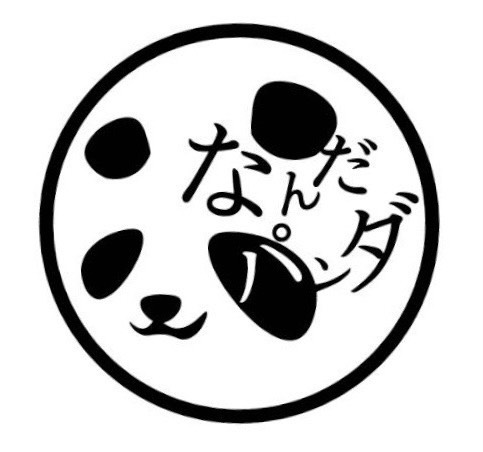
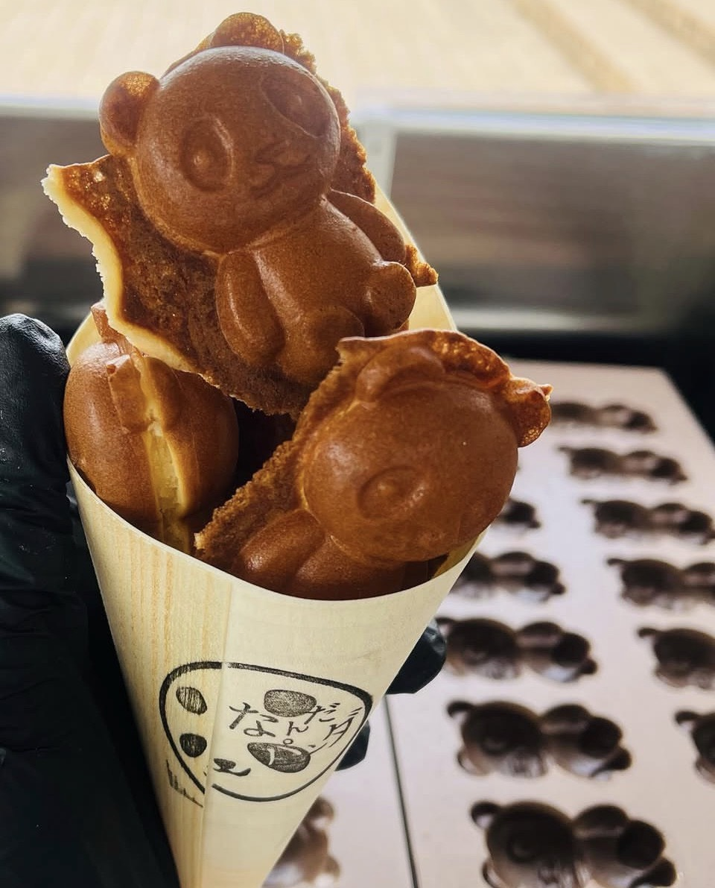
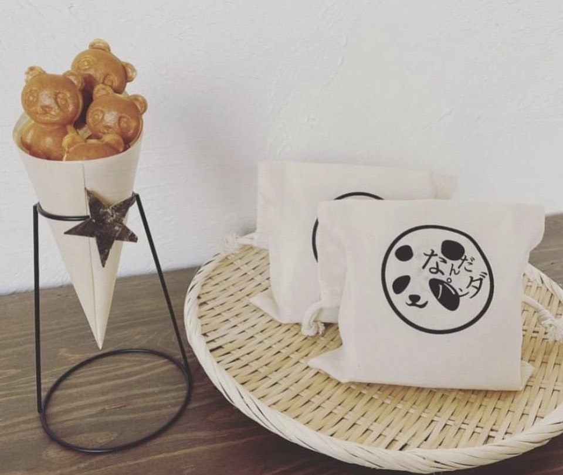
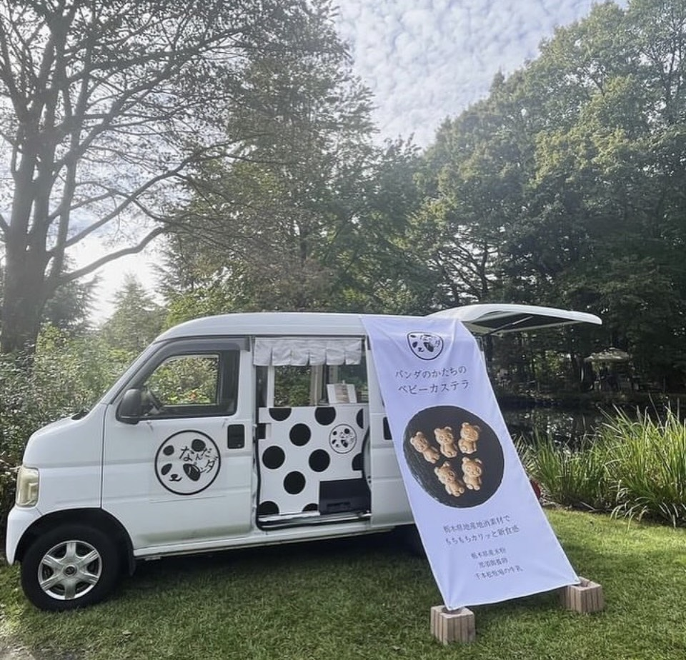
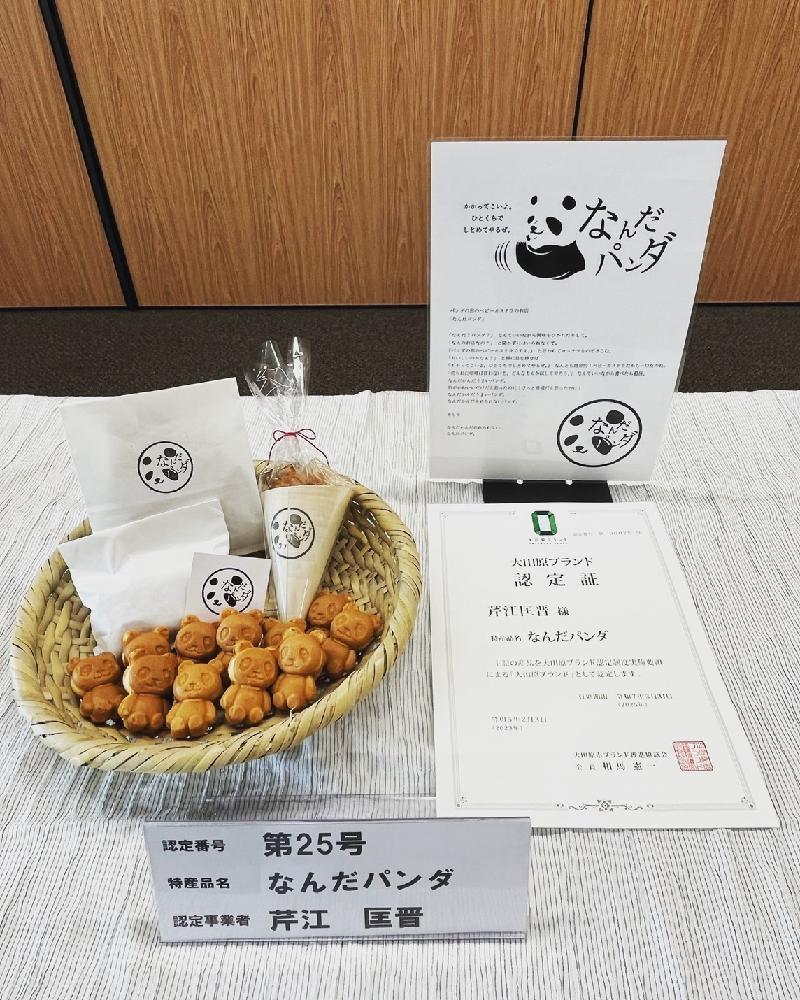

このたびは、弊ブランド「パンダカステラ」の園内売店での販売、および上野動物園様との限定コラボレーション商品開発についてご提案申し上げます。
「パンダカステラ」は、上野動物園のジャイアントパンダへの思い出を原点に生まれた、パンダの形のベビーカステラです。
那須の豊かな素材へのこだわりと、グルテンフリーへの配慮、そして栃木への地域貢献を込め、栃木産米粉100%で焼き上げています。



| 商品 | 価格 |
|---|---|
| 5個入り | 550円（税込） |
| 10個入り | 1,000円（税込） |
東武百貨店（大田原店・宇都宮店）、ソラマチ、渋谷、江東区、高輪ゲートウェイにて販売実績あり。
現在の取引先：トコトコ大田原、道の駅 那須の与一の郷


パンダカステラを、上野動物園様の売店・お土産コーナーにてお取り扱いいただくことをご提案いたします。
現在の園内フードは「その場で食べる系（ソフトクリーム・肉まん等）」が中心であり、持ち帰り・贈り物向けの手土産菓子としてのポジションは空いていると認識しております。パンダカステラは来園の記念・手土産として自然にご活用いただける商品です。
販売場所については、「パンダのもり」エリア周辺を第一希望としております。来園者がパンダの記憶に思いを馳せる場所で手に取っていただくことで、商品のストーリーが最も伝わると考えております。お土産コーナーでの展開も含め、貴協会のご都合に合わせて柔軟にご相談させていただきます。
販売条件（委託・卸等）につきましても、貴協会のご事情に合わせて対応いたします。
上野動物園様との共同企画として、上野動物園限定パッケージまたは限定フレーバーのパンダカステラの開発をご提案いたします。
コラボ商品アイデア例
2026年1月をもって、上野動物園のジャイアントパンダが中国へ旅立ちました。多くの来園者がその別れを惜しんでいます。
パンダカステラは、上野のパンダへの感謝と思い出から生まれたお菓子です。パンダがいない今だからこそ、「上野のパンダの記憶をつなぐお菓子」として来園者の心に寄り添うことができると考えております。
そして、次のジャイアントパンダ来日の際には、すでに根付いたコラボ商品として、再びパンダフィーバーを盛り上げる一翼を担えると確信しております。上野動物園様とパンダカステラが共に歩むことで、パンダへの愛を長く育てていければ幸いです。
ご関心をお持ちいただけましたら、まずは商品サンプルのご提供とご試食の機会をいただけますと幸いです。販売形式・数量・条件等につきましては、その後ご相談させていただきます。
どうぞよろしくお願い申し上げます。